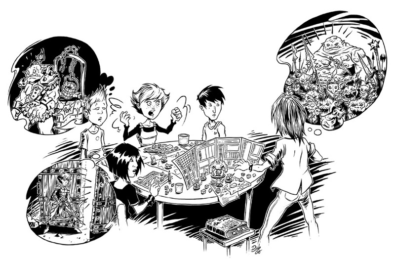
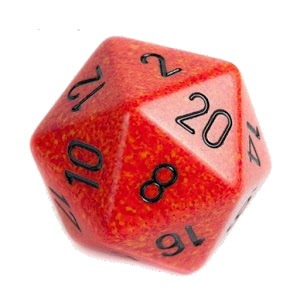

En une phrase…
Le jeu de rôle est un loisir qui consiste à s'installer avec quelques amis
autour d'une table pour décrire de façon collaborative les aventures de
personnages fictifs évoluant dans un monde imaginaire.
En quelques phrases…
Le jeu de rôle est un jeu de société coopératif. Un joueur particulier, le
meneur de jeu, met en scène une aventure dans un cadre imaginaire en s'aidant
d'un scénario. Les autres joueurs interprètent les personnages principaux de
cette aventure. Le jeu consiste en un dialogue permanent au moyen duquel les
joueurs décrivent les actions de leurs personnages. Le meneur de jeu décrit à
son tour les effets de ces actions, interprète les personnages secondaires et
arbitre la partie en s'appuyant sur des règles.
Il n'y a jamais ni gagnant ni perdant dans un jeu de rôle, le seul
véritable but du jeu étant le simple plaisir que l'on trouve à y jouer. La
partie s'arrête alors en fonction du temps disponible ou encore lorsqu'on
arrive à un point du récit présentant un certain caractère d'achèvement
(typiquement, lorsque l'objectif du scénario est atteint). On peut ainsi
continuer à jouer indéfiniment les mêmes personnages, chaque séance de jeu
constituant un chapitre de leur vie, un peu à la manière des épisodes d'une
série.
Comment ça marche ?

Le jeu de rôle est une activité de loisir et de divertissement dont le button
principal est d'endosser l'identité d'un personnage fictif. Ainsi,
installés autour d'une table, les joueurs évoquent ensemble un univers virtuel
dans lequel ils décrivent les aventures des personnages qu'ils interprètent,
chacun jouant le rôle de l'un d'entre eux.
Le jeu réside dans les échanges entre les participants, parmi lesquels on
distingue d'une part les joueurs qui détaillent les actions de leurs
personnages et les interprètent, le plus souvent oralement à la première
personne ; et d'autre part un meneur de jeu qui propose et arbitre les
situations, interprète les rôles secondaires et garantit la cohérence des
joueurs. Il s'appuie souvent sur un scénario, sorte de trame générique
présentant des lieux, des personnages et des amorces de situations. Le terme de
l'histoire étant soumis aux aléas des décisions prises par les personnages, il
n'est jamais déterminé par avance.
Les acteurs
Le maître du jeu. Tour à tour metteur en scène et conteur, il va
vous faire vivre l'aventure en vous mettant dans des situations que vous devrez
gérer. Il connaît la trame de l'histoire que vous allez vivre, les personnages que
vous allez rencontrer mais il ne réagira qu'en fonction de ce que vous décidez de
faire.
Les joueurs. Ce sont les acteurs. Ils font partie d'un groupe de
personnes réunies dans un but commun. Comme au théâtre ou au cinéma, chaque joueur
incarne un personnage dans la peau duquel il se glisse.
Le matériel
La feuille de personnage. Sur cette feuille sont inscrits tous les
éléments permettant de décrire votre personnage tel que vous l'avez créé : son
apparence, son histoire personnelle, ses compétences et capacités.
Les règles du jeu. Le maître du jeu doit les connaître pour vous les
expliquer et surtout pour pouvoir gérer toutes les situations qui vont se présenter.

Les dés. Certaines règles font appel au hasard. Les dés permettent
de résoudre les actions que les joueurs ou les personnages rencontrés entreprennent.
En plus de l'habituel dé à 6 faces, il existe de nombreuses autres formes de dés.